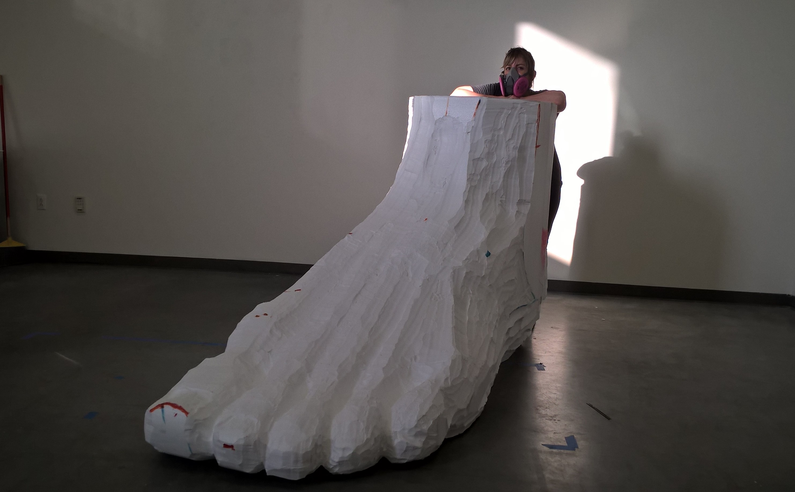
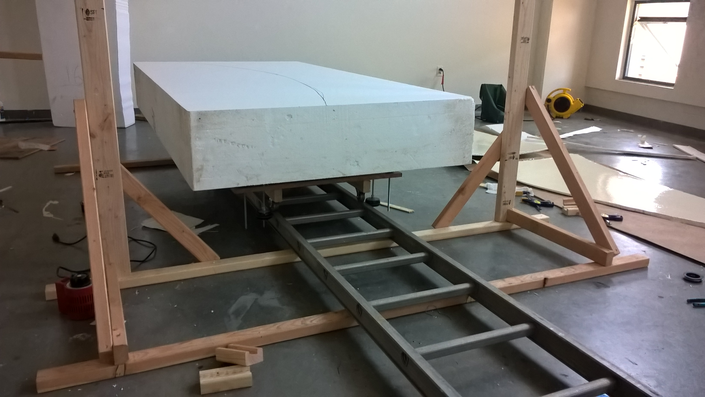
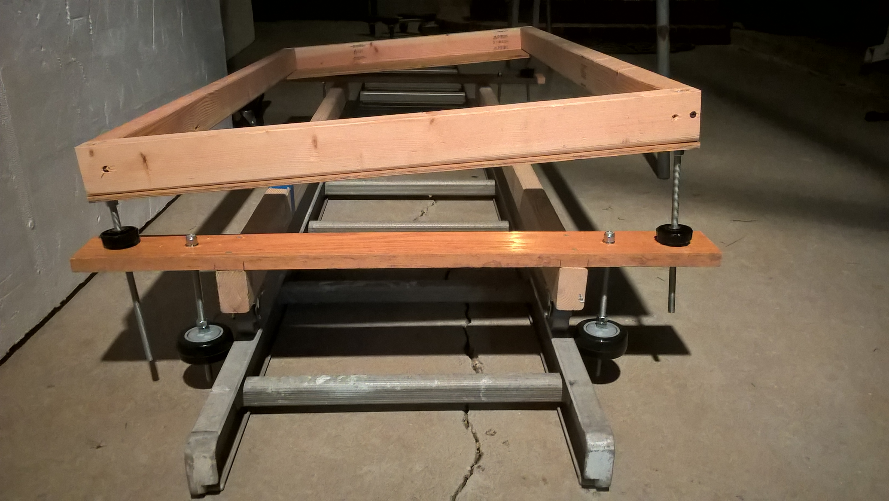
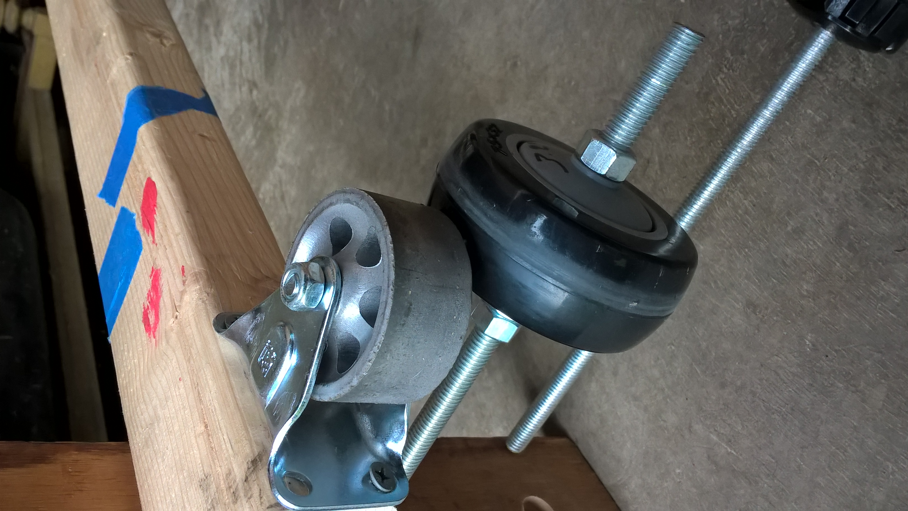
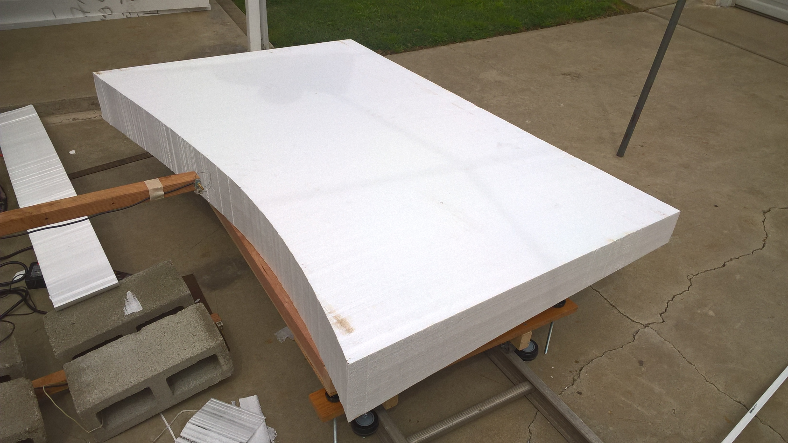
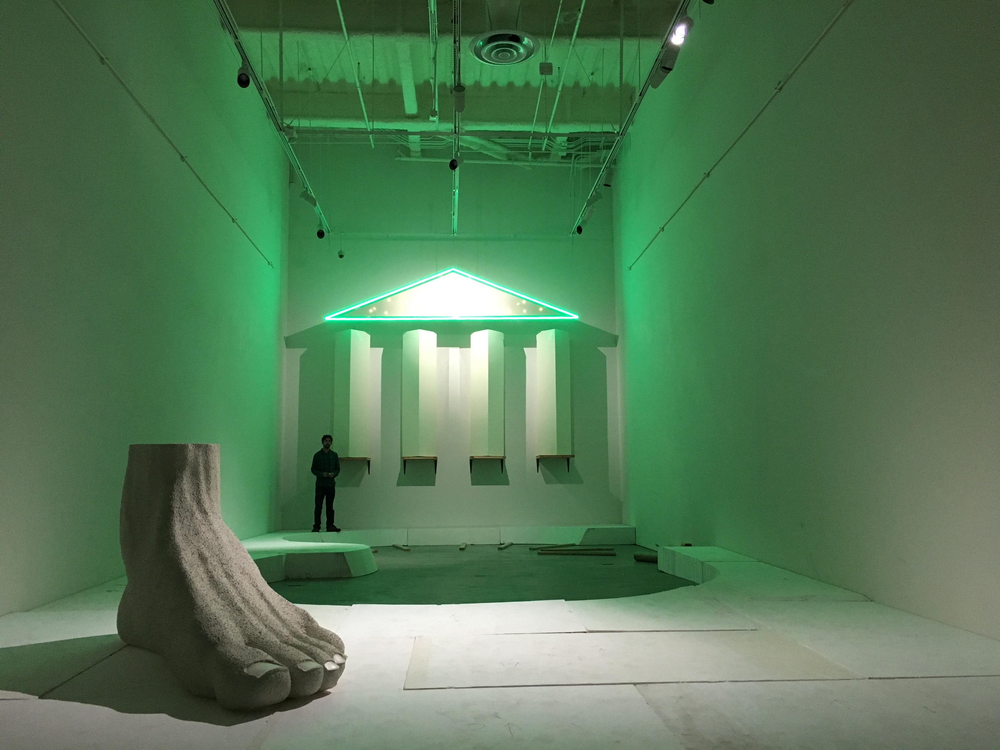
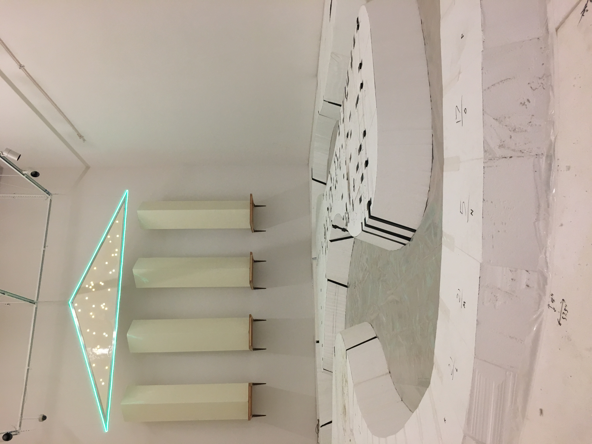

Hot Wire Foam Cutter
One of the projects I worked on with Mariah required the fabrication of about a thousand cubic feet worth of various polystyrene forms. Some were simple geometric shapes and others were not.
Some of the simpler designs were presented to industrial foam fabricators, but the quoted costs were too much to justify. So I had to cut it all. Now, the nicest way to cut polystyrene foam is with a hot wire (my opinion), so a small part of the job was making a variable current hot wire cutter. Here is the system I ended up with:

This is a really simple solution. It operates with a 12-50VDC power supply, and the only control is a single turn pot which varies the PWM duty applied to a low side switch. The cutting element is a length of 26AWG nicrome heater wire, which is connected to the controller via some low voltage outdoor lighting cable. The guage of the cutting element is a trade off - heavier wire is stronger, but lighter wire takes less current to get hot. 26AWG nicrome wire has a resistance per length of a little better than 2.6 ohms/foot, and it takes about 2A to get to foam cutting temperature (somewhere between 400F - 600F). I needed a cutter length of at least 4.5' which means a minimum resistance of about 12 ohms. That sets the minimum power supply voltage required at 24V. Now, I figured there could be a little loss in the connecting cables, and there could considerable loss in the switch since I didn't want to make a proper FET driver, so I figure just double it. Here is a little close up of the controller:

The circuit is just a variable duty astable 555 timer configuration, powered from a simple zener shunt regulator, and directly driving the gate of an IRF540 N-channel hexFET. This is not really the best way to drive this switch, but it was adequate for what I had to do. If I had to do it again I would spice the FET driver up a bit.
Here is a closeup of the wire clamps on the handles--the configuration used for manual cuts:

There were a bunch of other configurations too. Since I was going to be cutting from 4' X 3' X 8' blocks, I decided to make up a system with a cart on a track so I could just set the cutter and push the foam through it. Here is a picture of that setup -- the cutter isn't shown, but you can imagine the wire stretched between the posts to the sides of the foam block:
Most of the pieces I was cutting had a slight slope to them, so I gave the cart a 2D adjustable tilt:
The cart was made to roll on a 14' ladder my grandpa had. I did the wheels like this:
This was great. I also used this in "scroll saw mode" for trimming and curved cuts:
Like I mentioned before, I got through close to 1000 cubic feet of this stuff. Most of this made up an approximately 1000 sq. ft. sloping landscape with a lazy river -- no joke. The rest went in to the giant foot, and a 12 foot tall temple facade thing. This partial installation will give an idea of how big all this was:
Once the landscape was all in place, the pieces were taped together in preparation of the next phase:
After this, a huge EDPM pool liner went in, around 350 gallons of water, 1.7 tons of gravel and some other odds and ends. The final product was a functionin lazy river water ride -- check it out on Mariah's website.